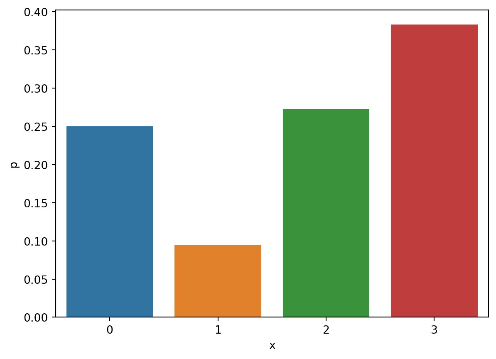
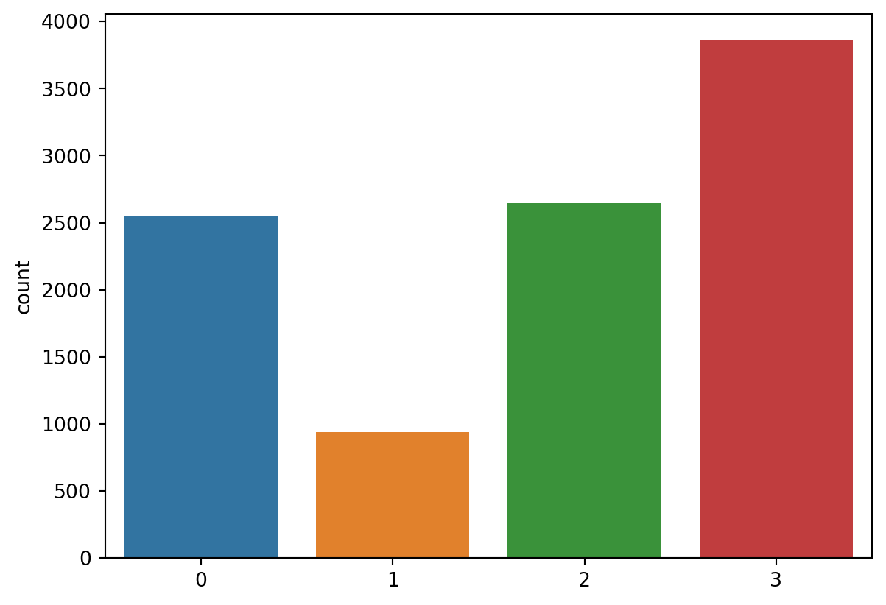
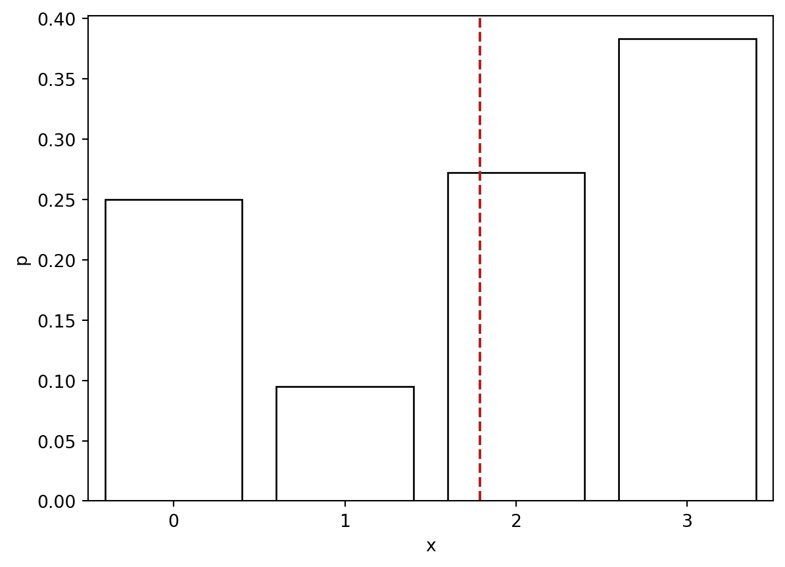

import pandas as pd
import numpy as np
import matplotlib.pyplot as plt
import seaborn as sns
px = pd.read_csv('https://raw.githubusercontent.com/febse/data/main/econ/prob_review/px.csv')
py = pd.read_csv('https://raw.githubusercontent.com/febse/data/main/econ/prob_review/py.csv')
pxy = pd.read_csv('https://raw.githubusercontent.com/febse/data/main/econ/prob_review/pxy.csv')
pxy = pxy[["x", "y", "p"]]9 Diskrete Verteilungen
Es seien X und Y zwei diskrete Zufallsvariablen mit möglichen Werten 0, 1, \ldots, K. Die Wahrscheinlichkeitsmassenfunktionen (probability mass function, PMF) p_X(x) und p_Y(y) weisen jedem möglichen Ergebnis eine Wahrscheinlichkeit zu.
Zum Beispiel:
p_X(x) = \begin{cases} 0.250 & \text{for } x = 0\\ 0.095 & \text{for } x = 1 \\ 0.272 & \text{for } x = 2 \\ 0.383 & \text{for } x = 3 \\ 0 & \text{otherwise} \end{cases}
p_Y(y) = \begin{cases} 0.76 & \text{for } y = 2\\ 0.24 & \text{for } y = 3 \\ 0 & \text{otherwise} \end{cases}
Die PMF von X und Y sind in den DataFrames px und py gespeichert.
px| x | p | |
|---|---|---|
| 0 | 0 | 0.250 |
| 1 | 1 | 0.095 |
| 2 | 2 | 0.272 |
| 3 | 3 | 0.383 |
py| y | p | |
|---|---|---|
| 0 | 2 | 0.76 |
| 1 | 3 | 0.24 |
sns.barplot(x='x', y='p', data=px)

Die PFM besitzen die Eigenschaft, dass die Summe über alle möglichen Werte eins ergibt:
\sum_{x = 0}^{3}p_X(x) = 0.250 + 0.095 + 0.272 + 0.383 = 1
::: {#exr-prob-y} ## PMF
Benutzen die die Funktion sum aus der NumPy-Bibliothek, um zu zeigen, dass sich die PMF von Y zu eins summiert. Die Wahrscheinlichkeiten befinden sich in der Spalte p des DataFrames py.
9.1 Sampling from a univariate distribution
Im Folgenden werden wir die Funktion choice aus der NumPy-Bibliothek verwenden, um eine Stichprobe von 10,000 Beobachtungen aus der Verteilung von X zu ziehen.
# Das erste Argument sind die möglichen Werte
# Das zweite Argument (p) sind die Wahrscheinlichkeiten
# Das dritte Argument (size) ist die Anzahl der Zufallszahlen
smpl_x = np.random.choice(px["x"], p = px["p"], size = 10000)
# Wir können uns die ersten 10 Zufallszahlen anschauen
smpl_x[0:10]array([3, 3, 2, 2, 3, 3, 0, 1, 0, 0])Wir können die absoluten Häufigkeiten (Anzahl) der Werte zählen
pd.value_counts(smpl_x)/tmp/ipykernel_2367/1849734910.py:1: FutureWarning:
pandas.value_counts is deprecated and will be removed in a future version. Use pd.Series(obj).value_counts() instead.
3 3863
2 2646
0 2552
1 939
Name: count, dtype: int64und die relative Häufigkeit berechnen, indem wir die Anzahl durch die Gesamtzahl der Beobachtungen teilen.
pd.value_counts(smpl_x, normalize=True)/tmp/ipykernel_2367/979932776.py:1: FutureWarning:
pandas.value_counts is deprecated and will be removed in a future version. Use pd.Series(obj).value_counts() instead.
3 0.3863
2 0.2646
0 0.2552
1 0.0939
Name: proportion, dtype: float64sns.countplot(x = smpl_x)
Übungsaufgabe 9.1 (Sampling from the Distribution of Y) Ziehen Sie eine Stichprobe von 10,000 Beobachtungen aus der Verteilung von Y und berechnen Sie die absoluten und die relativen Häufigkeiten der Werte und visualisieren Sie die Häufigkeiten mit einem Balkendiagramm.
# Benutzen Sie den Code aus der vorherigen Zelle, um eine Stichprobe von $Y$ zu ziehen. Achten Sie
# darauf, dass die Spalte mit den möglichen Werten von $Y$ "y" heißt.
# Die absoluten Häufigkeiten# Die relativen Häufigkeiten# Das Balkendiagramm9.2 Der Erwartungswert
Der Erwartungswert einer Zufallsvariablen (Verteilung) ist der gewichtete Durchschnitt aller möglichen Werte, die auftreten können. Die Gewichte sind die Wahrscheinlichkeiten, mit denen die Werte auftreten. Der Erwartungswert ist ein Maß für die Lage der Verteilung.
\begin{align} \mu_x & = E(X) = \sum_{x = 0}^{3} x p_X(x) = 0 \times 0.250 + 1 \times 0.095 + 2 \times 0.272 + 3 \times 0.383 = 1.788 \\ \end{align}
x_expected_value = np.sum(px["x"] * px["p"])
x_expected_value1.788np.mean(smpl_x)1.782fig, ax = plt.subplots()
sns.barplot(x='x', y='p', data=px, ax = ax, fill = False)
ax.axvline(x = x_expected_value, color = "firebrick", linestyle = "--")
Übungsaufgabe 9.2 (Erwartungswert) Berechnen Sie den Erwartungswert von Y.
Der Erwartungswert ist die beste Vorhersage für zukünftige Werte einer Zufallsvariablen, in dem Sinne, dass er den erwarteten Wert der quadratischen Verlustfunktion minimiert:
E[(X - \hat{x})^2]
Lassen Sie uns ein Beispiel konstruieren. Sie müssen das Ergebnis von X vorhersagen und Sie denken, dass die beste Vorhersage \bar{x} = 1 ist. Wenn das Spiel läuft, wird es vier mögliche Werte produzieren: 0, 1, 2 und 3. Die Fehler, den Sie machen werden, sind:
L(x) = (x - 1)^2 = \begin{cases} (0 - 1)^2 = 1 & \text{x = 0}\\ (1 - 1)^2 = 0 & \text{x = 1}\\ (2 - 1)^2 = 1 & \text{x = 2}\\ (3 - 1)^2 = 4 & \text{x = 3} \end{cases}
Übungsaufgabe 9.3 (Erwarteter Verlust) Berechnen Sie den erwarteten Verlust für eine Vorhersage von \bar{x} = 1.5.
# Berechnen Sie zuerst die Fehler
# errors = ... - 1.5
# errors# Danach quadrieren Sie die Fehler
## squared_errors = ...**2# Zuletzt multiplizieren Sie die quadrierten Fehler mit den Wahrscheinlichkeiten und summieren Sie
# np.sum(... * ...)9.3 Die Varianz
Die Varianz einer Zufallsvariablen (Verteilung) misst, wie unterschiedlich die möglichen Werte sind, die auftreten können. Werte, die unter p_X häufiger auftreten (eine höhere Wahrscheinlichkeit haben), erhalten ein höheres Gewicht. Werte, die unter p_X seltener auftreten, erhalten ein geringeres Gewicht in der Summe.
Definition 9.1 (Varianz) Die Varianz ist als die erwartete quadratische Abweichung von dem Erwartungswert definiert
Var(X) = E\left( (X - E(X))^2\right)
Für diskrete Verteilungen ist diese Erwartung einfach der gewichtete (mit den Wahrscheinlichkeiten) Durchschnitt der quadrierten Abweichungen vom Erwartungswert.
In unserem Beispiel ist die Varianz von X:
Var(X) = \sum_{x = 0}^{3} (x - \mu_x)^2 \times p_X(x)
\begin{align} Var(X) & = \sum_{x = 0}^{3} (x - \mu_x)^2 \times p_X(x) \\ & = (0 - 1.788)^2 \times 0.250 + (1 - 1.788)^2 \times 0.095 + (2 - 1.788)^2\times 0.272 + (3 - 1.788)^2 \times 0.383 \\ & = (-1.788)^2 \times 0.250 + (-0.788)^2 \times 0.095 + (0.212)^2\times 0.272 + (1.212)^2 \times 0.383 \\ & = 3.196 \times 0.250 + 0.620^2 \times 0.095 + 0.044 \times 0.272 + 1.468 \times 0.383 \\ & \approx 1.433 \end{align} \tag{9.1}
np.sum(((px["x"] - x_expected_value)**2) * px["p"])1.433056Theorem 9.1 (Eigenschaften des Erwartungswertes) Es sei X eine Zufallsvariable mit Erwartungswert E(X), Y eine Zufallsvariable mit Erwartungswert E(Y) und a eine feste Konstante (a \in \mathbb{R}). Man kann zeigen, dass die folgenden Eigenschaften gelten:
\begin{align} E(a) & = a \\ E(aX) & = aE(X) \\ E(X + Y) & = E(X) + E(Y) \end{align}
Ferner, wenn X und Y unkorreliert sind, dann ist der Erwartungswert des Produkts der beiden Zufallsvariablen gleich dem Produkt ihrer Erwartungswerte:
E(XY) = E(X)E(Y)
Proof of the Properties of the Expectation
- E(a) = a
The expected value of a discrete variable X with possible outcomes x_1, x_2, \ldots, x_n and probabilities p_1, p_2, \ldots, p_n is given by
E(X) = \sum_{i = 1}^{n} x_i p_i
Multiplying both sides by a gives
aE(X) = a\sum_{i = 1}^{n} x_i p_i = \sum_{i = 1}^{n} ax_i p_i
The right-hand side is the expected value of a random variable that takes the values ax_1, ax_2, \ldots, ax_n with probabilities p_1, p_2, \ldots, p_n. Therefore, E(aX) = aE(X).
- E(X + Y) = E(X) + E(Y)
This proof involves the joint distribution function of X and Y which we will introduce later. The proof is based on the linearity of the expected value operator.
Theorem 9.2 (Eigenschaften der Varianz) Es sei X eine Zufallsvariable mit Erwartungswert E(X), Y eine Zufallsvariable mit Erwartungswert E(Y) und a eine feste Konstante (a \in \mathbb{R}). Man kann zeigen, dass die folgenden Eigenschaften gelten:
Var(X) = E(X^2) - E(X)^2
\begin{align} Var(a) & = 0 \\ Var(aX) & = a^2 Var(X) \end{align}
Falls X und Y unkorreliert sind, dann ist die Varianz der Summe der beiden Zufallsvariablen gleich der Summe ihrer Varianzen:
Var(X + Y) = Var(X) + Var(Y)
Übungsaufgabe 9.4 (Erwartungswert und Varianz) Benutzen Sie die Use the distributions of X and Y from Tabelle 9.1 and Tabelle 9.2 to compute the expected value and the variance of
2X + 3Y + 1.
Assume that X and Y are independent.
Lösung. E(2X + 3Y + 1) = \\ Var(2X + 3Y + 1) =
9.4 Die gemeinsame Verteilung
Die gemeinsame Wahrscheinlichkeitsmassenfunktion gibt die Wahrscheinlichkeit des gleichzeitigen Auftretens von x und y an. Zum Beispiel können Sie die Frage stellen: Was ist die Wahrscheinlichkeit von x = 2 und y = 3.
Für zwei diskrete Zufallsvariablen ist es bequem, die PMF als eine Tabelle darzustellen. Der DataFrame pxy enthält eine Verteilung von X und Y.
pxy| x | y | p | |
|---|---|---|---|
| 0 | 0 | 2 | 0.241 |
| 1 | 0 | 3 | 0.009 |
| 2 | 1 | 2 | 0.089 |
| 3 | 1 | 3 | 0.006 |
| 4 | 2 | 2 | 0.229 |
| 5 | 2 | 3 | 0.043 |
| 6 | 3 | 2 | 0.201 |
| 7 | 3 | 3 | 0.182 |
Manchmal ist es allerdings einfacher, die gemeinsame Verteilung in einer Matrix zu visualisieren. Die Matrix wird als Kreuztabelle bezeichnet. Die Zeilen entsprechen den möglichen Werten von X und die Spalten den möglichen Werten von Y. Die Zellen enthalten die Wahrscheinlichkeiten.
pxy.pivot(index = "x", columns = "y", values = "p")| y | 2 | 3 |
|---|---|---|
| x | ||
| 0 | 0.241 | 0.009 |
| 1 | 0.089 | 0.006 |
| 2 | 0.229 | 0.043 |
| 3 | 0.201 | 0.182 |
p_{XY}(x=2, y=3) = 0.043
Wie in dem eindimensionalen Fall, müssen sich die Wahrscheinlichkeiten zu eins summieren.
\sum_{x = 0}^{3}\sum_{y = 2}^{3} p_{XY}(x, y) = 1
np.sum(pxy["p"])1.09.5 Randverteilungen
Aus der gemeinsamen PMF können wir die Randverteilungen von X und Y ableiten.
p_X(x) = \sum_{y} p_{XY}(x, y)
pxy.groupby("x")["p"].sum()x
0 0.250
1 0.095
2 0.272
3 0.383
Name: p, dtype: float64Übungsaufgabe 9.5 (Randverteilungen) Berechnen Sie die Randverteilungen von X und Y aus der gemeinsamen Verteilung p_{XY}.
# pxy.groupby(...)[...].sum()9.6 Bedingte Verteilungen
Code
pxy["p_y_given_x"] = pxy["p"] / pxy.groupby("x")["p"].transform("sum")
pxy.pivot(index = "x", columns = "y", values = "p_y_given_x")| y | 2 | 3 |
|---|---|---|
| x | ||
| 0 | 0.964000 | 0.036000 |
| 1 | 0.936842 | 0.063158 |
| 2 | 0.841912 | 0.158088 |
| 3 | 0.524804 | 0.475196 |
Die bedingte Verteilung von Y gegeben X ist die Wahrscheinlichkeitsverteilung von Y unter der Bedingung, dass X einen bestimmten Wert annimmt. Die bedingte Verteilung wird als p_{Y|X}(y | x) geschrieben.
9.7 Unabhängigkeit
Zwei Zufallsvariablen sind unabhängig, wenn das Ergebnis einer der Variablen die Wahrscheinlichkeitsverteilung der anderen nicht beeinflusst. Stellen Sie sich vor, Sie haben zwei Lottoscheine: einen von einer Lotterie in Deutschland und einen von einer Lotterie in Bulgarien. Es wäre sicher anzunehmen, dass die realisierten Gewinne der deutschen Lotterie die Gewinnchancen des bulgarischen Tickets nicht beeinflussen.
Betrachten wir nun den Fall von abhängigen Zufallsvariablen. Sei X der Pegel eines Flusses (an einer Messstelle) zur Zeit t und Y der Pegel des gleichen Flusses fünf Minuten später. Es wäre sicher anzunehmen, dass wenn der Pegel des Flusses bei t hoch war, dies die Verteilung des Niveaus des Flusses bei t plus fünf Minuten beeinflussen würde.
Definition 9.2 (Unabhängigkeit) Zwei Zufallsvariablen X und Y sind unabhängig, wenn die gemeinsame PMF gleich dem Produkt der Randverteilungen ist.
p_{XY}(x, y) = p_X(x)p_Y(y)
9.7.1 Bedingte Verteilungen unter Unabhängigkeit
Wir können die gemeinsame Verteilung p_{XY}(x, y) unter der Annahme der Unabhängigkeit von X und Y konstruieren, indem Wir für jede mögliche Kombination von X und Y das Produkt der Randverteilungen berechnen.
p_{XY}(x, y) = p_X(x)p_Y(y)
Code
pxy['p_x'] = pxy.groupby('x')['p'].transform('sum')
pxy['p_y'] = pxy.groupby('y')['p'].transform('sum')
pxy['p_xy_ind'] = pxy['p_x'] * pxy['p_y']
pxy.pivot(index = "x", columns = "y", values = "p_xy_ind")| y | 2 | 3 |
|---|---|---|
| x | ||
| 0 | 0.19000 | 0.06000 |
| 1 | 0.07220 | 0.02280 |
| 2 | 0.20672 | 0.06528 |
| 3 | 0.29108 | 0.09192 |
Nun schauen wir uns die bedingte Verteilung von Y gegeben X an. Die bedingte Verteilung von Y gegeben X unter der Annahme der Unabhängigkeit ist gleich der Randverteilung von Y.
Code
pxy["p_y_given_x_ind"] = pxy["p_xy_ind"] / pxy.groupby("x")["p_xy_ind"].transform("sum")
pxy.pivot(index = "x", columns = "y", values = "p_y_given_x_ind")| y | 2 | 3 |
|---|---|---|
| x | ||
| 0 | 0.76 | 0.24 |
| 1 | 0.76 | 0.24 |
| 2 | 0.76 | 0.24 |
| 3 | 0.76 | 0.24 |
9.8 Der bedingte Erwartungswert
Wir haben gesehen, wie wir die bedingten Verteilungen von Y gegeben X im vorherigen Abschnitt hergeleitet haben. Nun können wir die Frage stellen: Was ist der Erwartungswert von Y, wenn X bereits den Wert 0 angenommen hat (zum Beispiel). Wir können die bedingte Verteilung von Y gegeben X = 0 nehmen und den Erwartungswert dieser Verteilung berechnen.
Für die unabhängige gemeinsame Verteilung in Tabelle 9.5 ist der bedingte Erwartungswert von Y gegeben X = 0:
E(Y | X=0) = \sum_{y = 2}^{3} y p_{Y|X=0}(y) = 2 \times 0.76 + 3 \times 0.24 = 2.24
Für die abhängige gemeinsame Verteilung in Tabelle 9.3 ist der bedingte Erwartungswert von Y gegeben X = 0:
E(Y | X=0) = \sum_{y = 2}^{3} y p_{Y|X=0}(y) = 2 \times 0.964 + 3 \times 0.036 = 2.036
2 * 0.964 + 3 * 0.036Wir können den bedingten Erwartungswert von Y für jeden möglichen Wert von X berechnen.
E(Y | X = x) = \begin{cases} 2.036 & \text{for } x = 0 \\ 2.060 & \text{for } x = 1 \\ 2.158 & \text{for } x = 2 \\ 2.475 & \text{for } x = 3 \end{cases}
Code
pxy.groupby("x").apply(lambda x: np.sum(x["p_y_given_x_ind"] * x["y"]))/tmp/ipykernel_2367/3384244227.py:1: DeprecationWarning:
DataFrameGroupBy.apply operated on the grouping columns. This behavior is deprecated, and in a future version of pandas the grouping columns will be excluded from the operation. Either pass `include_groups=False` to exclude the groupings or explicitly select the grouping columns after groupby to silence this warning.
x
0 2.24
1 2.24
2 2.24
3 2.24
dtype: float64Code
pxy.groupby("x").apply(lambda x: np.sum(x["p_y_given_x"] * x["y"]))/tmp/ipykernel_2367/388503762.py:1: DeprecationWarning:
DataFrameGroupBy.apply operated on the grouping columns. This behavior is deprecated, and in a future version of pandas the grouping columns will be excluded from the operation. Either pass `include_groups=False` to exclude the groupings or explicitly select the grouping columns after groupby to silence this warning.
x
0 2.036000
1 2.063158
2 2.158088
3 2.475196
dtype: float64Im Fall der abhängigen Variablen ist der bedingte Erwartungswert von Y gegeben X nicht konstant, sondern variiert mit X.